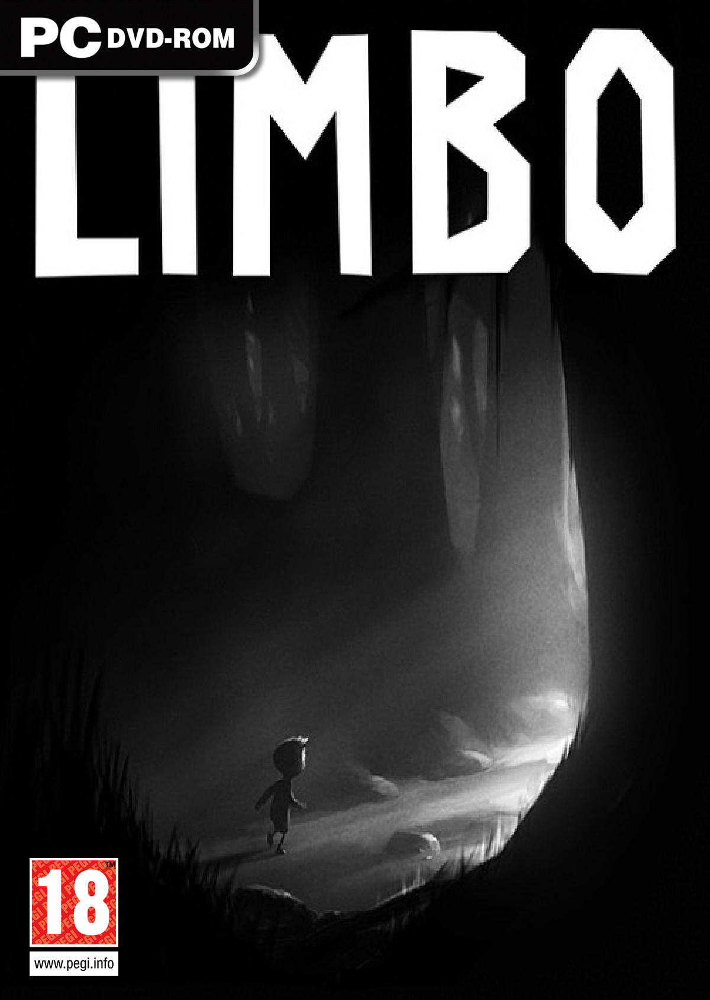
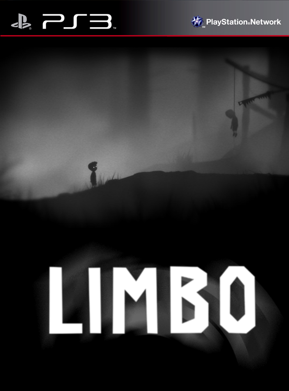
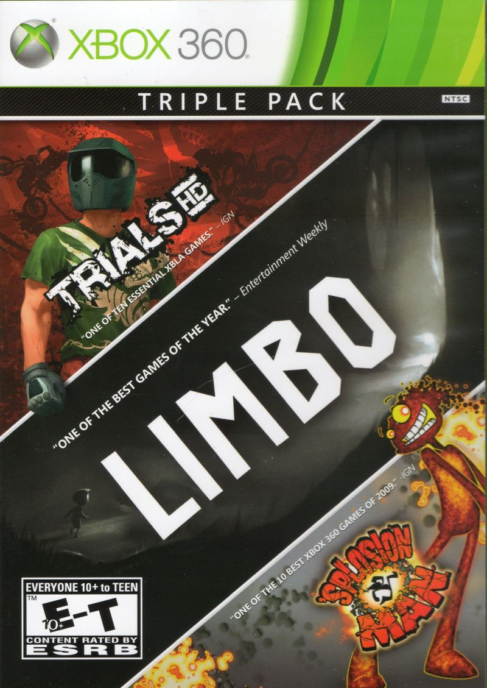
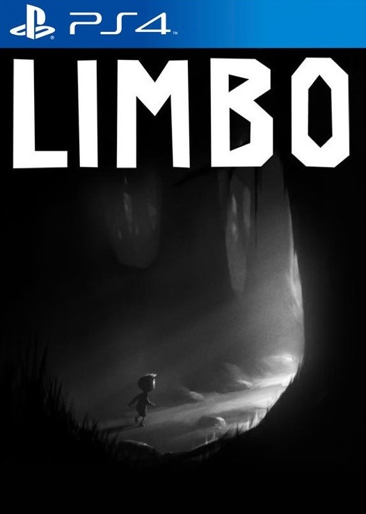
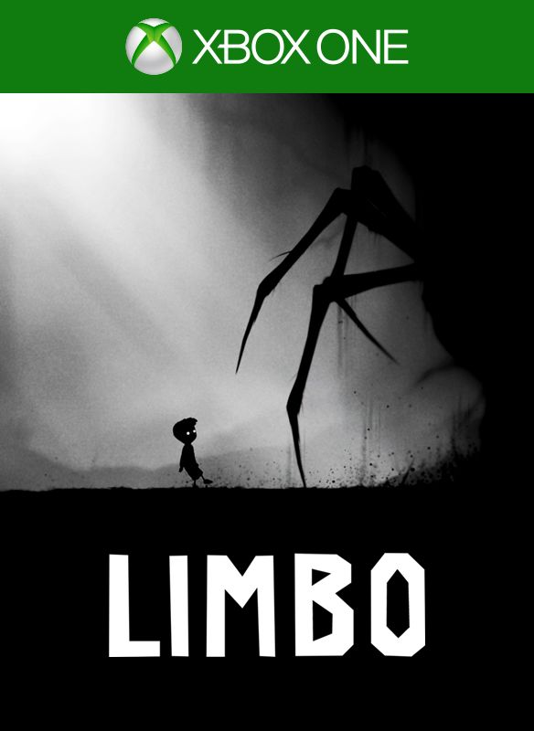
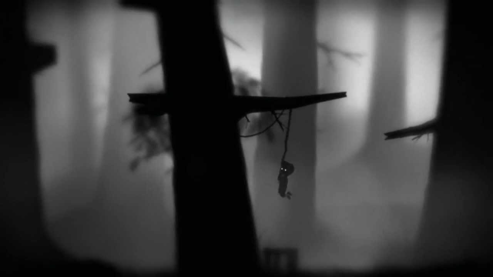
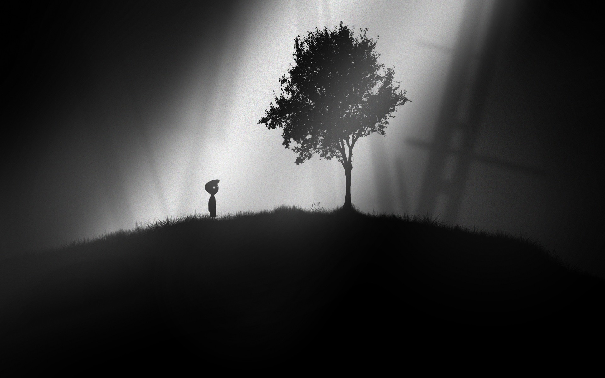

LIMBO
Limbo is a puzzle-platform video game developed by independent studio Playdead. The game was released in July 2010 as a platform exclusive title on Xbox Live Arcade, and was later re-released as part of a retail game pack along with Trials HD and 'Splosion Man in April 2011. Ports of the game to the PlayStation 3 and Microsoft Windows were created by Playdead, released after the year-long Xbox 360 exclusivity period was completed. An OS X version was released in December 2011, followed by Linux port in June 2014. Ports for PlayStation Vita and iOS were also released in June and July 2013, respectively. An Xbox One port was given away for free on 23 November 2014 to the majority of customers who purchased an Xbox One on its original launch day, and a PlayStation 4 version was released on 24 February 2015.
    Limbo is a 2D sidescroller, incorporating the physics system Box2D to govern environmental objects and the player character. The player guides an unnamed boy through dangerous environments and traps as he searches for his sister. The developer built the game's puzzles expecting the player to fail before finding the correct solution. Playdead called the style of play "trial and death", and used gruesome imagery for the boy's deaths to steer the player from unworkable solutions.
The Game is presented in black-and-white tones, using lighting, film grain effects and minimal ambient sounds to create an eerie atmosphere often associated with the horror genre. Journalists praised the dark presentation, describing the work as comparable to film noir and German Expressionism. Based on its aesthetics, reviewers classified Limbo as an example of video games as an art form. Limbo received positive reviews, but its minimal story polarised critics; some critics found the open-ended work to have deeper meaning that tied well with the game's mechanics, while others believed the lack of significant plot and abrupt ending detracted from the game. A common point of criticism from reviewers was that the high cost of the game relative to its short length might deter players from purchasing the title, but some reviews proposed that Limbo had an ideal length. The title was the third-highest selling game on the Xbox Live Arcade service in 2010, generating around $7.5 million in revenue. The title won several awards from industry groups after its release, and was named as one of the top games for 2010 by several publications. Playdead released Inside in 2016, supported financially by the success of Limbo and revisiting many of the same themes from it.
| Review scores | |
|---|---|
| Publication | Score |
 |
9/10 |
 |
9/10 |
 |
9/10 |